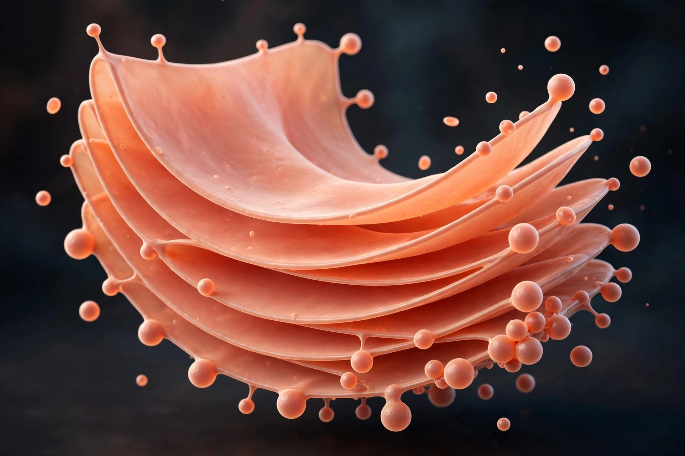

Golgi apparatus
From Wikipedia, the free encyclopedia
The Golgi apparatus (also Golgi complex or Golgi body) is an organelle found in most eukaryotic cells. It processes, modifies, packages and distributes proteins and lipids received from the Endoplasmic reticulum, acting as the cell's shipping department. It was identified in 1898 by the Italian biologist Camillo Golgi.

[Image: The Golgi apparatus as a stack of flattened cisternae]
Structure
The apparatus consists of stacks of flattened membrane sacs called cisternae. The side facing the endoplasmic reticulum (the cis face) receives transport vesicles; material moves through the stack, being chemically modified en route — for example by adding or trimming sugar chains (glycosylation) — and leaves from the trans face in vesicles directed to the Cell membrane, to lysosomes, or to secretion.
Function
Besides modifying proteins, the Golgi builds some complex carbohydrates, assembles proteoglycans, and in plant cells produces much of the material of the Cell wall. Sorting signals on cargo determine whether a protein is secreted, embedded in the membrane, or sent to a lysosome; errors in tagging cause lysosomal storage diseases.